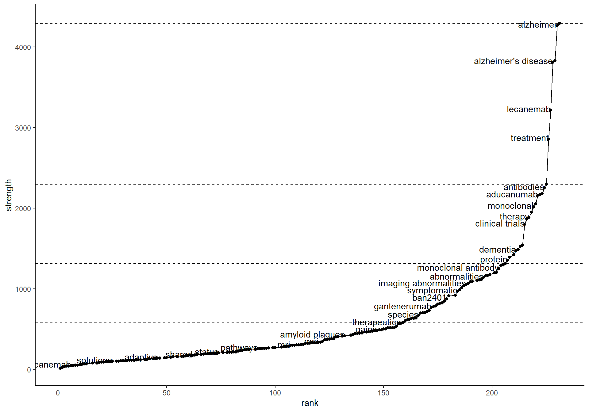

Impact of novel Alzheimer’s disease drug discovery on the research field using text mining and topic models
Introduction
Alzheimer’s Disease
Alzheimer’s Disease is a neurodegenerative disease that is the most common cause of dementia and affects over 40 million people worldwide. It is a progressive disease that affects memory, thinking and behaviour. The disease is characterised by the build up of amyloid plaques and neurofibrillary tangles in the brain. There are currently no cures for AD, with most treatments aiming to alleviate the symptoms of AD.
Treatments for AD
Currently, there are a number of new immunotherapies undergoing clinical trials which aim to target the beta-amyloid protein and treat AD. Aducanumab was approved by the FDA in June 2021, and lecanemab was granted accelerated approval by the FDA in January 2023. Furthermore, there are two AD treatments which are in Phase III clinical trials; donanemab and remternetug.
Methods
litsearchR
The litsearchR package was used to search PubMed for abstracts containing the MeSH term ‘Alzheimer’s Disease’ and show the most frequent words in the keywords and titles to ensure all papers are captured. See Figure 1.

Results
AD Research Publication
This study found 6199 papers that were published between 2022-01-01 and 2023-10-10 that contained the identified terms.
The distribution of publications is shown in Figure 3.

The distribution of publications containing the terms associated with ‘lecanemab’ is shown in Figure 4.
N-gram Analysis
Unnigrams
The most frequent unigrams are shown in Figure 5.

The distribution by month of the top frequent words, as determined from Figure 5, is shown in Figure 6.

Bigrams
Exploring some of the bigrams the word “disease” are shown in ?@tbl-tbl-bigram-plot. The most common bigrams beginning with “neuro” are shown in ?@tbl-tbl-bigram-plot.
Table 1: ?(caption)
| word1 | n |
|---|---|
| parkinson’s | 1393 |
| neurodegenerative | 544 |
| huntington’s | 325 |
| alzheimer | 309 |
| cardiovascular | 131 |
| parkinson | 59 |
| vessel | 55 |
| coronavirus | 49 |
| neurological | 48 |
| cerebrovascular | 43 |
| liver | 39 |
| heart | 38 |
| bowel | 37 |
| multifactorial | 32 |
| periodontal | 32 |
Bigrams in abstracts
| word2 | n |
|---|---|
| diseases | 2483 |
| disorders | 1423 |
| disease | 633 |
| disorder | 338 |
| tangles | 293 |
| effects | 239 |
| conditions | 194 |
| symptoms | 140 |
| loss | 133 |
| death | 108 |
| processes | 93 |
| cells | 79 |
| function | 75 |
| dysfunction | 73 |
| cell | 72 |
Bigrams in abstracts
| word1 | n |
|---|---|
| common | 215 |
| progressive | 184 |
| related | 168 |
| chronic | 82 |
| derived | 72 |
| induced | 61 |
| prevalent | 58 |
| treating | 55 |
| disease | 54 |
| mediated | 50 |
| major | 49 |
| multiple | 49 |
| intracellular | 44 |
| treat | 44 |
| underlying | 41 |
Bigrams in abstracts
Relations of bigram networks are shown in Figure 7. Bigram networks for pre-leca and post-leca are shown in Figure 8 and Figure 9 respectively. Strength networks for bigrams are shown in Figure 10 and split into pre-leca and post-leca in Figure 11 and Figure 12 respectively.


Trigrams
Most common trigrams in pre- or post-leca text corpuses are shown in Figure 13

Topic Modelling
Unigrams
The top 10 terms in each pre- and post- leca corpus are shown in Figure 14 and Figure 15 respectively.
Bigrams
The top 10 bigrams in topic models for pre- and post- leca corpuses are shown in Figure 16 and Figure 17 respectively.